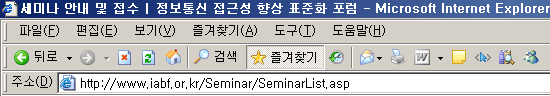
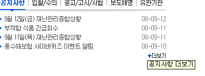

점검 방법 및 준수/위반 사례
이전
목차
다음
익스플로러 (브라우저) 화면 확인
3-2. 페이지의 논리적 구성
점검 가능 지표
의미에 맞는 적절한 HTML태그를 사용하여야 한다.
각 링크의 목표 위치를 명확하게 하여야 한다.
점검 방법 설명
URL을 고정하기 위한 빈 프레임 제거
링크의 텍스트 혹은 title="부가설명" 을 명확하게 제공
O 좋은 예

O 좋은 예
